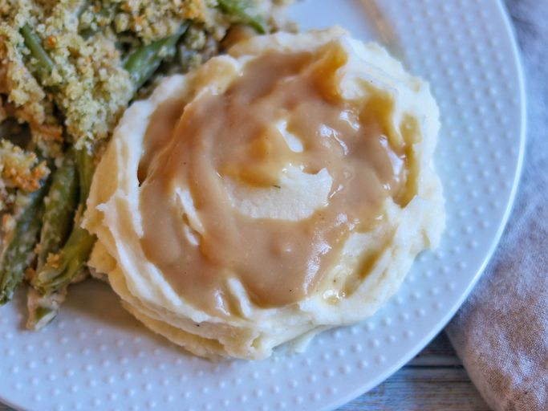

Mashed potato

Description
Forgot those low-fat or no-fat options... holiday mashed potatoes are supposed to have a ridiculous amount of butter in them! Eating a scoop of these potatoes a few times a year is a well-deserved treat.
Ingredients
- 3 ¼ pounds russet potatoes
- 1 pound unsalted European-style butter
- salt and freshly ground black pepper to taste
- ¼ cup hot milk
- 1 pinch cayenne pepper, or to taste
Steps
- Peel potatoes and cut into quarters. Transfer to a bowl of cold water and rinse to remove starch. Drain and transfer to a pot of cold water. Very generously salt the water and bring to a boil over high heat. Reduce heat and simmer until potatoes are soft and the tip of a knife goes in easily, 20 to 25 minutes.
- While the potatoes are cooking, cut butter in chunks and let come to room temperature.
- Drain potatoes thoroughly and return to the pot. Set over medium-low heat and mash with a potato masher until potatoes. Season with salt and pepper and add ¼ of the softened butter chunks. Mash until butter just about disappears.
- Add another 1/4 of the butter and mix with a wire whisk until it just about disappears. Whisk in the remaining butter in 2 additions as before; potatoes will be light and creamy after all the butter has been mixed in.
- Whisk in hot milk until incorporated. Add cayenne and more salt if needed. Serve immediately.